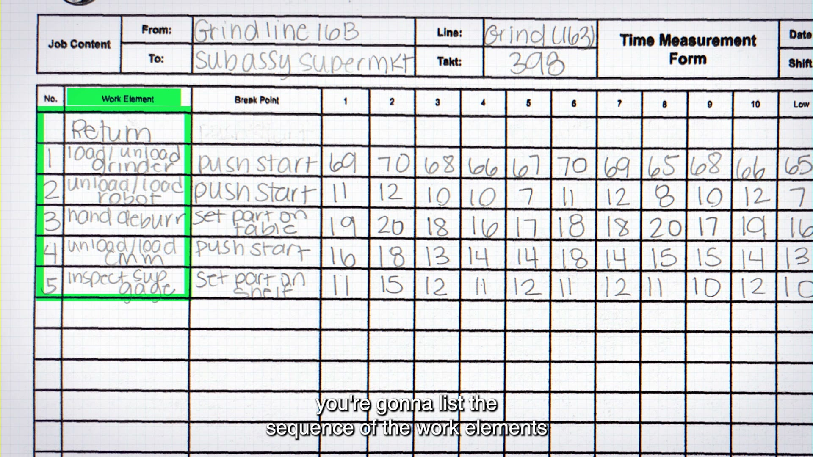
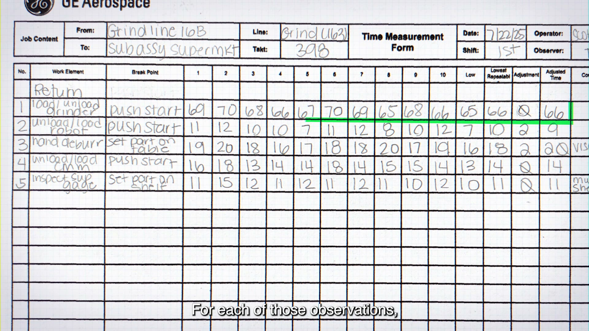
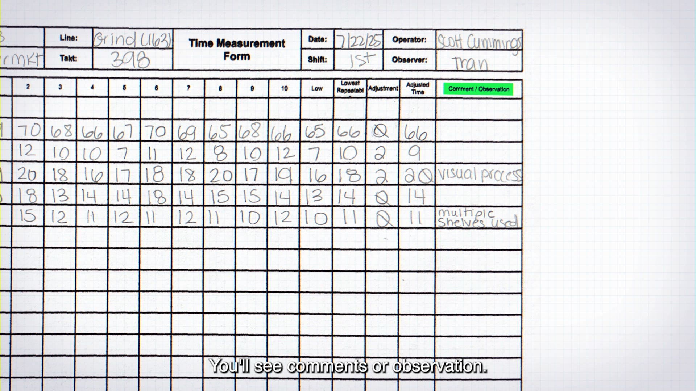
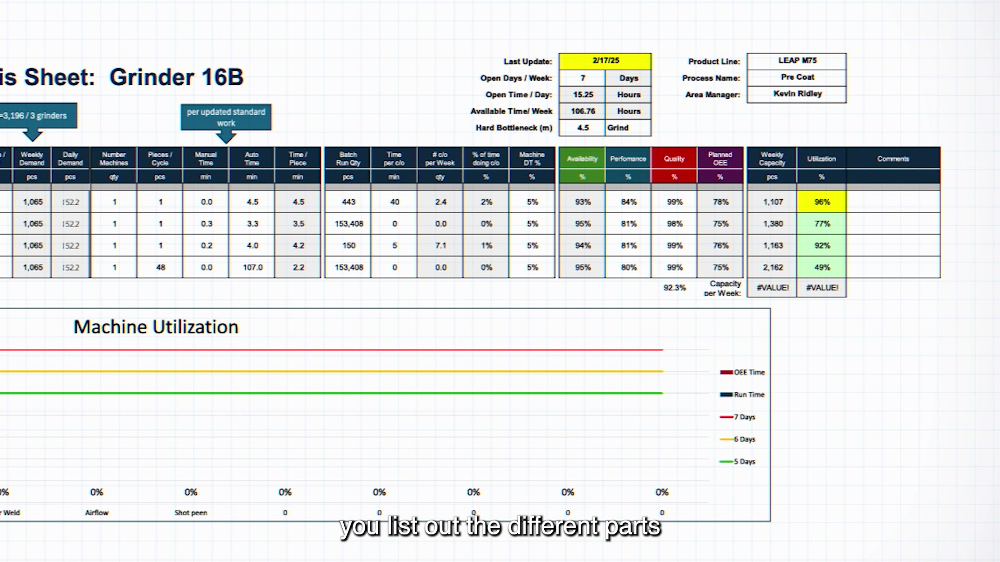
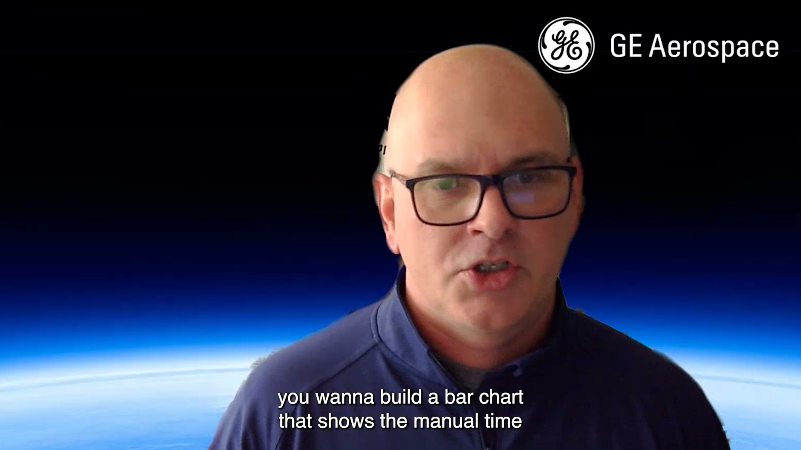
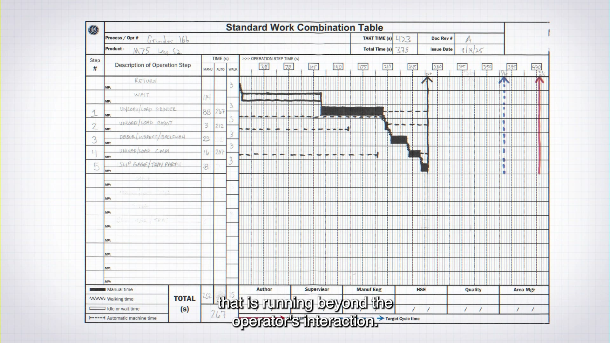
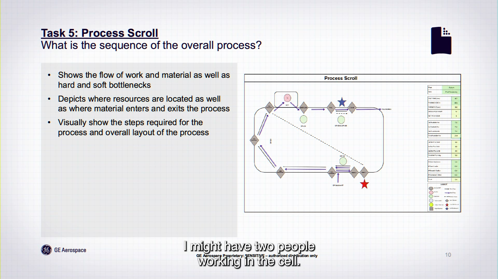
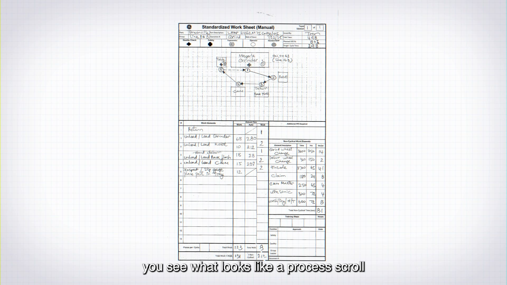
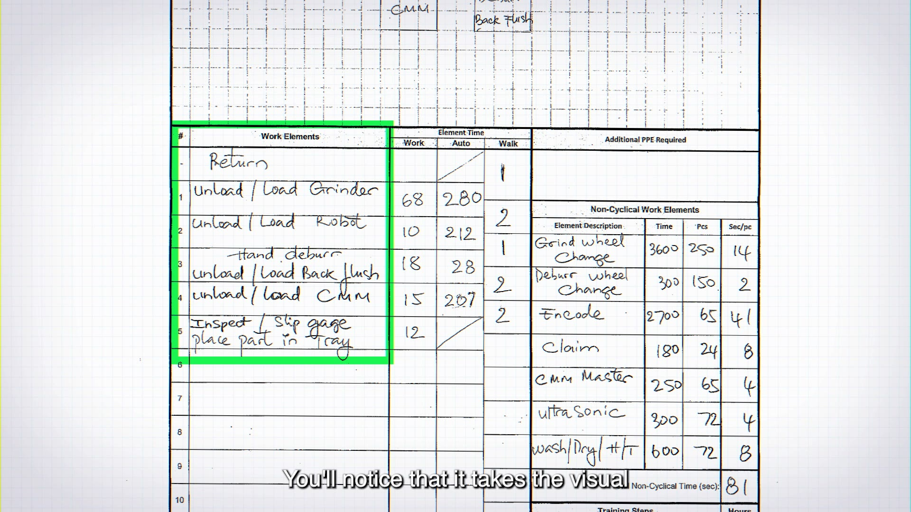

Standard Work Documentation
A shot-by-shot map of the 21-minute training: the six standard work templates, taught in build order, then proven on the floor at Greenville.
Cold open — Flight Deck
Title card over the engineering blueprint motif. Corey Gibbons introduces the six standard work templates.

The complete approach
All six templates on one slide — macro view to detailed view. The roadmap for everything that follows.

Time Measurement Form
Work elements listed top-to-bottom with breakpoints. The Grind line 16B form, marked up by hand.

Observe ten cycles
Run the clock across at least ten cycles to capture the natural variation and find the true cycle time.

Lowest → repeatable → adjusted
Lowest vs. lowest-repeatable time; the difference is the adjustment that yields the realistic cycle time.

Machine Capacity Sheet
Manual time vs. auto-run time per part. Compare total time per item to actual excess capacity against demand.

Balance chart — operator loading
One bar per operator, takt line across the top. Under the line is capacity; the gap is waste; over the line is beyond takt.

Manual time vs. takt
Each bar combines manual and estimated time so you can see who meets customer demand within takt.

Standard Work Combination Sheet
Steps in order with manual, machine, and walk time combined into one visual against the takt line.

Solid · wavy · dotted · red
Solid = manual, wavy = walk, dotted = machine running on, red vertical = takt. Does one cycle finish in takt?

Process Scroll
Layout of material and operator flow. Reveals standard WIP and hard vs. soft bottlenecks.

Standard Worksheet
The single sheet that pulls it together — layout up top, work elements and non-cyclical work below, with sign-off.

Train, deploy, sustain
Build an action plan — often during a Kaizen event — to implement and sustain the standard.
Proven on the floor
Greenville machines high-pressure turbine blades for CFM, Boeing, Airbus, and Honda. Standard work surfaced safety, quality, and an ergonomic fix.
The internal customer
A part off every four minutes for FPI. When it slips, the standard work highlights it — and the team problem-solves back to standard.